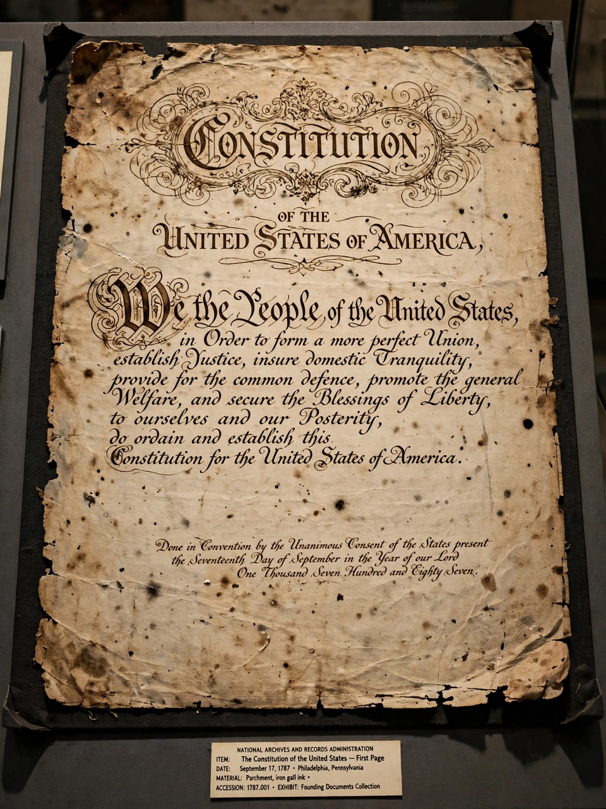

From Wikipedia, the free encyclopedia
| Constitution of the United States | |
 Page one of the original copy of the Constitution | |
| Created | September 17, 1787 |
| Ratified | June 21, 1788 |
| Effective | March 4, 1789 |
| Location | National Archives, Washington, D.C. |
| Authors | Constitutional Convention |
| Signatories | 39 of 55 delegates |
| Purpose | To replace the Articles of Confederation and form the national frame of government |
The Constitution of the United States is the supreme law of the United States. It superseded the Articles of Confederation, the nation's first constitution, on March 4, 1789. Originally including seven articles, the Constitution delineates the frame of the federal government. Its first three articles embody the doctrine of the separation of powers, whereby the federal government is divided into three branches: the legislative, consisting of the bicameral Congress (Article I); the executive, consisting of the president and subordinate officers (Article II); and the judicial, consisting of the Supreme Court and other federal courts (Article III).
Article IV, Article V, and Article VI embody concepts of federalism, describing the rights and responsibilities of state governments, the states in relationship to the federal government, and the shared process of constitutional amendment. Article VII establishes the procedure used by the thirteen states to ratify it. The Constitution has been amended 27 times; the first ten amendments, known collectively as the Bill of Rights, offer specific protections of individual liberty and justice and place restrictions on the powers of government. It is the oldest and shortest written national constitution in force.
In September 1786, commissioners from five states met in the Annapolis Convention to discuss reforms to the Articles of Confederation. They invited state delegations to a convention in Philadelphia the following May. The Constitutional Convention convened on May 25, 1787, with George Washington presiding. Rather than amend the Articles, the delegates drafted a new constitution based largely on the Virginia Plan, tempered by the New Jersey Plan and merged in the Connecticut Compromise, which created a bicameral legislature with proportional representation in the House and equal representation of states in the Senate. Contentious issues included slavery, addressed in compromises such as the Three-fifths Compromise.
The final text was signed on September 17, 1787. Ratification required approval by nine of the thirteen states through conventions. The ensuing debate produced The Federalist Papers, written by Alexander Hamilton, James Madison and John Jay, arguing for ratification, while Anti-Federalists pressed for a bill of rights. Delaware was the first state to ratify (December 7, 1787), and New Hampshire's ratification on June 21, 1788, was the ninth, making the Constitution effective. The new government began operating on March 4, 1789.
The Preamble begins with the words "We the People" and states the Constitution's purposes: to form a more perfect union, establish justice, insure domestic tranquility, provide for the common defence, promote the general welfare, and secure the blessings of liberty. Article I creates Congress and lists its enumerated powers, including taxation, commerce and declaring war, and contains the Necessary and Proper Clause. Article II vests executive power in the president. Article III creates the federal judiciary. Article IV addresses state relations, Article V the amendment process, and Article VI the supremacy of the Constitution as "the supreme Law of the Land". Article VII set the terms of ratification.
Twenty-seven amendments have been added. The Bill of Rights (1791) guarantees freedoms of speech, religion and the press, the right to bear arms, protection against unreasonable searches, and rights of the accused. Later amendments abolished slavery (13th, 1865), guaranteed equal protection and due process (14th, 1868), prohibited denial of the vote on account of race (15th, 1870) or sex (19th, 1920), authorised the federal income tax (16th, 1913), established Prohibition and later repealed it (18th and 21st), limited presidents to two terms (22nd, 1951), and lowered the voting age to 18 (26th, 1971).
The Supreme Court is the final arbiter of constitutional meaning, a role consolidated by Marbury v. Madison (1803), which established judicial review. Schools of interpretation include originalism, which seeks the text's meaning at the time of adoption, and living constitutionalism, which holds that interpretation should adapt to contemporary conditions. Landmark interpretations have expanded or restricted federal and state power in areas from commerce and civil rights to privacy and gun ownership.